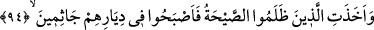

dönün. Çok yakında yol kapanacak ve yol arkadaşı bulunamayacak. Şunu söyleyen ne
güzel söylemiş:
Ey gönül kalk kudsiyet şarabıyla mest ol ki
Biz bu bulanık dünyada oturmak için gelmedik
94. Emrimiz gelince, Şuayb’ı ve onunla beraber îmân edenleri tarafımızdan bir
rahmetle kurtardık. Zulmedenleri ise korkunç bir gürültü yakaladı da yurtlarında
dizüstü çökekaldılar.
Şuayb kavminin azâba ve helâke dûçar olacağına dâir ezelde takdir ettiğimiz
“emrimiz gelince Şuayb’ı ve onunla beraber îmân edenleri” yâni îmân konusunda
Şuayb (a.s.)’a tâbi olup tıpkı onun inandığı gibi inananları, onlar hakkında
“tarafımızdan” kaynaklanan ezelî “bir rahmetle” kendi amelleri sebebiyle değil,
sadece fazl u keremimiz sebebiyle -nitekim ehl-i sünnet’in görüşü de budur-
“kurtardık.”
Allah Teâla bu âyette, Rab oluşunun gereği olan rahmetin, günahlar yüzünden tesiri
ortaya çıkan gazabından önce geldiğini göstermek için îmân edenlerin kurtuluşunu
zâlimlerin helâkinden önce zikretmiştir.
Bazıları diyor ki: Bu âyetteki rahmet, Allah’ın kendilerini muvaffak kıldığı îmândan
ibarettir. Fakir (Bursevî) der ki: Bu görüş şu şekilde izah edilebilir: Cenab-ı Hakk’ın
adâletinden kaynaklanan azâb ve helâk, küfre ve zulme isnâd edilince; fazl u kereminden
kaynaklanan kurtulmanın da îmâna isnâd edilmesini gerektirdi. Ancak bu îmân ve salih
ameller, Allah’ın muvaffak kılmasına bağlı şeyler olduğu içindir ki kendilerine
mücerred bir fazl u kerem ve rahmet olarak bahşedilmiştir, anla!
Büyüklük taslayarak Şuayb (a.s.)’ın dâvetini kabûle yanaşmayarak kendilerine
“zulmedenleri ise korkunç bir gürültü yakaladı”
“Sayha (korkunç gürültü)” ile kastedilen; Cebrâil (a.s.)’ın “Hepiniz ölün.” şeklindeki
sayhasıdır. A‘râf sûresinde “Onları şiddetli bir zelzele yakaladı.” (7/91)
buyrulmaktadır. Bu zelzelenin havanın dalgalanmasına sebep olan o korkunç gürültünün
beraberinde getirdiği neticelerden biri olması muhtemeldir.
İbn Abbas (r.anhümâ)’nın şöyle dediği rivayet edilir: “Şuayb ile Salih (a.s.)’ın
kavimleri hariç Allah Teâlâ aynı azabla iki ümmete azab etmemiştir.”
Şuayb (a.s.)’ın kavminin uğradığı azab şudur: Onlara çok şiddetli sıkıntı verici bir
sıcaklık ârız oldu. Bunun üzerine etrafı ağaç dolu sulak bölgeye gelip girdiler. O sırada
gölgelik şeklinde bir bulut zuhur etti ve ağaçlarını çepeçevre kuşattı, ağaçları tutuşturdu.